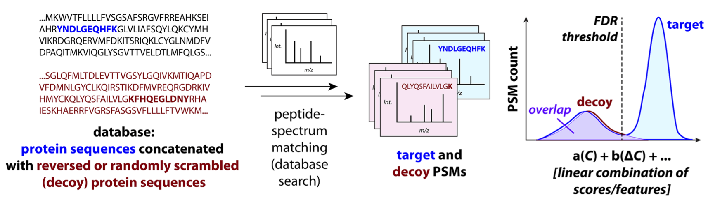
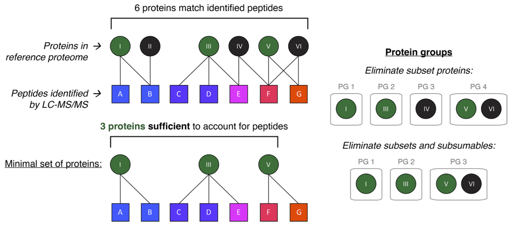

Slot 88 · target-decoy · Proteomics: Identification · layout mock
Picked on the arc mock: two pages, Score · Proteins, a True identity Off · On reveal, off by default. This mock
is the page itself at the widget's 550px, drawn from 01-1 cell 2 and its two figures (below). Every number is computed on this
page by _lab/proteomics-arc-model.js. Grey-ruled boxes in §6 are your calls.
01-1 cell 2 · proteomics-peptide.png

01-1 cell 2 · proteomics-protein.png

1 · The score is computed, not drawn from a curve — measured
The arc mock drew scores from two distributions. Your figure runs the real chain: a database of protein sequences concatenated with their reversed sequences, each spectrum matched against every peptide of the right mass, target and decoy alike. So the search here is that chain, small: 400 random proteins digested by trypsin (7–25 residues) are the targets; the same 400 reversed and digested are the decoys; each spectrum comes from a peptide in the database (60%) or from a protein that is not, shows each of its b and y fragment ions with a probability that varies spectrum to spectrum, among 120 noise peaks. The score is the number of the candidate's fragment ions that land on a peak (±0.5). The best candidate within ±0.5 Da of the precursor is the PSM.
The decoys behave as the method needs: per score, the count of decoy PSMs tracks the count of wrong target PSMs (a reversed protein has a target's composition), so D/T estimates the share wrong. And the claim the page makes holds: the list's rate is not each match's.
2 · The Score page — three bands in your figure's order, two ways to draw the histogram
Top: the database — the protein the current spectrum came from, around its peptide, and the same stretch reversed, as the decoy database holds it. Middle: the current spectrum, peaks up; below it the fragment ions of the best target and the best decoy candidate, a full tick where an ion lands on a peak. Bottom: every PSM so far, by its score, with the threshold. A overlays targets and decoys, as your figure; B mirrors the decoys under the axis. Both after the whole search, True identity Off.
3 · True identity On, and what the threshold readout says
Left: the targets split into correct and wrong — the one view a real search cannot have, so it is off by default. Right: the two candidate ways to set the threshold; each prints the same two lines under the histogram — the estimate above the threshold, and the decoy share in the score just at it, which is what a match AT the threshold is worth.
4 · The Search press
The widget opens empty. One press searches the spectra: the first ones slowly, each drawn in the middle band as it is matched and dropped into its bin, then faster until all are in. Three frames of one press.
5 · The Proteins page — your figure, a press a stage
Your figure's own case: proteins I–VI and peptides A–G, I {A, B}, II {B}, III {C, D, E}, IV {E, F}, V {F, G}, VI {F, G}. A press per stage, as the figure reads: the six proteins that match, the subsets eliminated (four protein groups), the subsumables eliminated (three), the minimal set (I, III, V). The statuses are computed by the model's parsimony, which reproduces your figure's groups.
6 · The calls
6.1 · Where the score comes from A · the fragment-matching search above, every score computed (recommended: it is your figure's chain, and the decoy works for the reason the lesson gives) | B · scores drawn from two curves, as the arc mock
6.2 · The histogram A · targets and decoys overlaid, as your figure (recommended: the overlap is the thing the decoys measure) | B · decoys mirrored under the axis
6.3 · The threshold A · a Threshold slider in matched ions, the scores where the estimate reaches 1% and 5% marked on the axis (recommended: the reader moves the line and reads D/T change) | B · an FDR control 1% · 5% (the lesson's “usually 1% to 5%”), the threshold found for it
6.4 · The middle band A · three bands always: the database and the current spectrum stay above the histogram after the search, showing the last spectrum; hovering a bin shows one of its spectra (recommended) | B · the bands only while the search runs; after it the histogram takes the page
6.5 · The data A · Spectra from a peptide in the database 30% · 60% · 90%, and Seed (recommended: measured in the arc — the list stays at its rate while the threshold and the near-threshold share move) | B · Seed only
6.6 · The Proteins page A · your figure's case, a press a stage, nothing else to set (recommended) | B · the same, and a click on a peptide marks it not identified, so the reader can see a group split or a subset appear